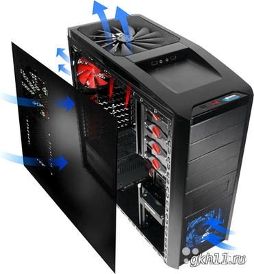

Системный блок

Содержимое системного блока в значительной степени зависит от вычислительной системы в целом, её задач,
целей и форм-фактора. В случае рационального использования, системный блок в большей степени соответствует
потребностям вычислительной системы. В зависимости от вычислительной системы, в системном блоке могут
находиться различные компоненты аппаратного обеспечения:
вычислительный блок в виде главной/системной/материнской платы с установленным на ней процессором, ОЗУ;
в материнскую плату могут быть установлены карты расширения (видеокарта, звуковая карта, сетевая плата) в
случае крупного размера имеющие специальные средства крепления внутри шасси;
также в корпус могут быть установлены блок(и) питания.
В случае использования в составе ЦОД или вычислительного кластера, монтируемого в стойку,
устанавливаются средства телеметрического управления и контроля (например на основе коммутаторов
или управляющего ПО, ориентированного на веб-интерфейс).